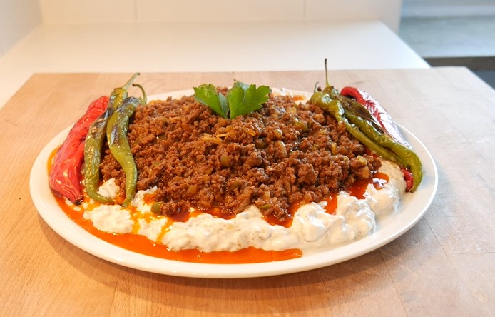
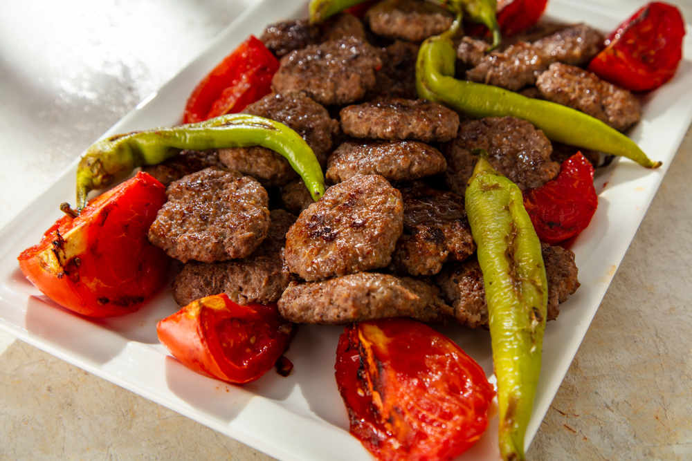

MEAT MEAL
-

- 500 grams of ground beef
- 2 large eggplants
- 1 cup strained yogurt
- 2 cloves of garlic (optional, you can add to yogurt)
- Juice of half a lemon
- Salt, black pepper
- Olive oil
- Fresh mint or fresh chili pepper
- Red pepper flakes
- Roast the eggplants over an open flame on the stove or in the oven until they are charred. Peel off the skin and mash the eggplants into a puree. Add a bit of salt and lemon juice, then mix well.
- Put the strained yogurt in a bowl. Optionally, grate the garlic and add it to the yogurt. Add salt and black pepper, then mix thoroughly.
- Combine the roasted eggplant puree with the yogurt mixture. Mix well.
- Season the ground beef with salt and black pepper, and cook it in a pan or on a grill.
- Spread the eggplant-yogurt mixture on a serving plate. Top it with the cooked ground beef.
- Garnish with red pepper flakes, fresh mint, or chopped fresh chili pepper, if desired.
- After the rice has absorbed the water, remove the pot from heat but keep the lid on. Let the rice rest without opening the lid for about 10 minutes. This resting time allows the rice to continue steaming and fluffing up.
- After resting, use a fork or spatula to gently fluff the rice, ensuring it stays light and fluffy.
- Serve it hot. Ali Nazik Kebab is often served with pita bread or lavash.
ALI NAZIK KEBAB
Ingredıents:

MANTI
Ingredıents:
- 250 grams of minced meat
- 1 medium onion, finely chopped
- 2 tablespoons of vegetable oil
- 1 cup of finely chopped mushrooms
- Salt, black pepper, red pepper flakes (optional)
- 2 cups of all-purpose flour
- 1 egg
- 1/2 cup of water
- 1 cup of yogurt
- 2 cloves of garlic, minced
- Start by preparing the filling. Heat oil in a pan, add chopped onions, and sauté until golden brown. Add minced meat and cook until it releases and absorbs its juices. Add mushrooms, and cook until the moisture evaporates. Season with salt, black pepper, and red pepper flakes. Allow the filling to cool.
- For the dough, mix flour, egg, water, and salt in a bowl. Knead until you get a soft dough. Cover the dough with plastic wrap and let it rest for 30 minutes.
- Divide the rested dough into small walnut-sized pieces and roll each piece into thin sheets. Place a portion of the filling in the center of each sheet and fold the edges to form the desired dumpling shape.
- Arrange all the dumplings on a tray.
- Boil water in a pot, add salt, and place the dumplings into the boiling water. Boil for 5-10 minutes until they float to the surface.
- Mix yogurt and minced garlic. Drain the boiled dumplings and transfer them to a serving plate.
- Pour the yogurt sauce over the dumplings. Drizzle with a sauce made by heating butter or oil with red pepper flakes.

Meatball
Ingredıents:
- 500 grams of ground beef
- 1 cup fine bulgur
- 1 medium-sized onion
- 1/4 cup vegetable oil
- Salt, black pepper, red pepper flakes
- Place the bulgur in a bowl and add hot water. Stir well, cover, and let the bulgur swell.
- Grate or finely chop the onion.
- In a large bowl, combine the ground beef, grated onion, vegetable oil, salt, black pepper, and red pepper flakes.
- Add the swollen bulgur to the mixture and mix the ingredients well. Knead the mixture until it reaches a consistent texture.
- If desired, add finely chopped green onions or parsley and knead the mixture again.
- Take small portions of the mixture and roll them into balls using your palms.
- Then, let's put our meatballs into our pan and cook them by turning them on both sides.

PIDE
Ingredıents:
- 4 cups of all-purpose flour
- 1 cup of warm water
- 1 cup of warm milk
- 1 packet of instant yeast or half a packet of fresh yeast
- 1 teaspoon of granulated sugar
- Half a cup of vegetable oil
- 300 grams of ground beef
- 1 large onion
- 2 tomatoes
- 1 green pepper
- 2 tablespoons of tomato paste
- Salt, black pepper, red pepper flakes
- In a bowl, take warm water, add sugar, and mix. Then add yeast and wait for it to dissolve.
- Place the flour in a large bowl. Make a well in the center and add vegetable oil, warm milk, salt, and the yeast mixture.
- Knead the mixture thoroughly until you have a soft, non-sticky dough. Cover it and let it rise. It may take about 1 hour for the dough to double in size.
- Once the dough has risen, place it on a floured surface, knead a few times, and shape it into your desired pide form.
- To prepare the filling, sauté the ground beef in a pan. Add grated onion and diced green pepper if using.
- To the cooked meat, add grated tomatoes, tomato paste, and spices. Remove from heat and add chopped parsley.
- Place the filling in the center of the dough and fold the edges inward.
- Put the pide on a baking tray lined with parchment paper and brush the top with egg yolk.
- Bake in a preheated oven at 200°C (392°F) until the top is golden brown (approximately 25-30 minutes).

STUFFED MEAL
Ingredıents:
- 1.5 cups fine bulgur wheat
- 1 tea glass of semolina
- 1 teaspoon of ground red pepper
- 1 teaspoon of pepper paste
- A little less than 1 cup flour
- 1 teaspoon of salt
- 1 glass of cold water
- 2 tablespoons of oil
- 300 g minced meat
- 3 medium sized onions
- Half a teaspoon of tomato paste
- Half a parsley
- Onions are finely chopped. Add oil to the pan, add the onions and fry until they turn pink.
- Minced meat is added to the roasted onions and roasted over low heat until the water is absorbed.
- Then add tomato paste and fry for another 3 minutes. Add some water again (it should remain soft, not dry).
- Add spices, salt, walnuts and finely chopped parsley and turn off the stove. It is left to cool.
- Fine bulgur is soaked in 1 glass of cold water as if making it sterile.When the water is absorbed, add semolina, paste, spices, salt and water little by little for 15 minutes and knead well.
- Then flour is added and kneaded for another 5 minutes. If it doesn't fall apart when handled and rolled, it's okay. It may stick to the hand. Wash your hands thoroughly and the dough will not stick when handled again.
- Take pieces slightly larger than the walnut and open it thinly, taking water from time to time with your thumb. The inside is placed and extended upwards in the shape of a lemon. The same process is applied to all of them.

KARNIYARIK
Ingredıents:
- 4 eggplants
- 300 grams of minced meat
- 1 large onion
- 2 green peppers
- 2 tomatoes
- 3 cloves of garlic
- 1/2 cup of vegetable oil
- Salt
- Black pepper
- Cut off the tops of the eggplants and make shallow incisions on their skins. Then, soak them in salty water for about 20-30 minutes to reduce bitterness.
- Remove the eggplants from the water and pat them dry.
- Heat vegetable oil in a pan and fry the eggplants on both sides until they become soft. Place the fried eggplants on paper towels to absorb excess oil
- Finely chop the onion. Dice the green peppers and tomatoes.
- In the same pan, add a bit more oil and sauté the chopped onions until they become translucent.
- Add the minced meat and cook until it browns.Add the diced green peppers, chopped garlic, and tomatoes. Season with salt, black pepper, and red pepper flakes. Stir and cook until the mixture releases and absorbs its juices.
- Once the filling is ready, remove it from the heat and stir in the chopped parsley. Let it cool.Open the fried eggplants and fill them with the prepared mixture. Close the eggplants and brush a bit of vegetable oil on top.
- Bake in a preheated oven at 180°C (356°F) until the tops are golden brown, approximately 20-25 minutes.